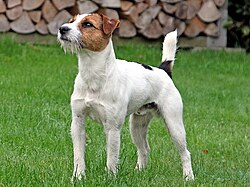

-
Історія породи
Породу вивів Джон Рассел у Великій Британії у першій половині XIX століття. Англійський пастор, на прізвисько Джек, був азартним та заповзятим мисливцем на лисиць. Тому у своїй селекційній роботі над породою він намагався поєднати спритність, швидкість та розум. Для створення породи парсон-рассел-тер'єрів схрестили з таксами і вельш-коргі.
-
Опис
Невеликий, рухливий та активний собака прямокутного формату , заввишки 25-30 см, вагою — 5-6 кг. Досить сильно виражені міцні груди, сильна шия та широкий череп. Очі маленького розміру, мигдалеподібної форми, переважно темного кольору. Важливими пропорційними характеристиками стандарту породи є: тварина більш розтягнута в довжину, ніж у висоту; вага повинна розподілятися в еквіваленті 1 кг на 5 см зросту; глибина тіла від холки до грудини дорівнює довжині передньої ноги від ліктя до землі. Шерсть гладка і трохи жорстка на зламі. Вона добре захищає тварин від холодної погоди. У забарвленні переважає білий колір шерсті. Він розбавляється невеликими мітками чорного і рудого кольору. Рудий колір може мати найрізноманітніші відтінки: від жовтого до світло-коричневого.
-
Характер
а характером порода сильно відрізняється від інших тер'єрів. У джек-рассел-тер'єра врівноваженіша поведінка, ніж у схожих порід. Це добродушна і ласкава тварина, він поступливий і мало гавкає. Собака дружелюбно налаштована до дітей. Особливо, якщо вона зростає разом з ними. Але для пса дуже важлива рання соціалізація, оскільки джек-рассел може бути агресивно налаштованим до інших собак.
-
Догляд
Джек-рассел-тер'єр має коротку шерсть, а тому практично не потребує вичісування вовни — це необхідно робити один раз на тиждень. Тричі на місяць потрібно підрізати кігті, стежити за чистотою вух і очей, а також купати собаку 1-2 рази на тиждень.
-
У культурі
-
Джек-рассел-тер'єр на прізвисько Ніппер став відомий в 1899 році, коли художник Френсіс Барро намалював собаку, що слухає фонограф, для своєї роботи, відомої як «Голос його майстра». Пізніше картина отримала визнання як частина натхнення для дизайну RCA, EMI і бренду HMV.
-
Собака цієї породи з'явився у фільмі «Маска» (1994) та його продовженні 2005 року.
-
Пес-сапер Патрон брав участь у розмінуванні території Чернігівської області та став зіркою соцмереж у ході російсько-української війни.
-
Джек-рассел-тер'єр
Джек-ра́ссел-тер'є́р — мисливська жорсткошерста порода собак, з групи тер'єрів.
on the main